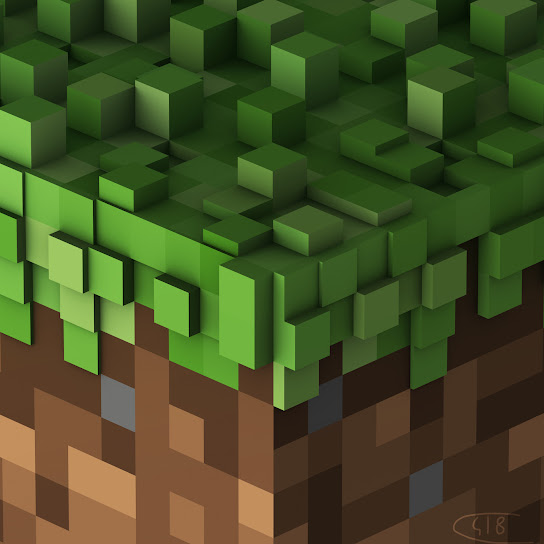
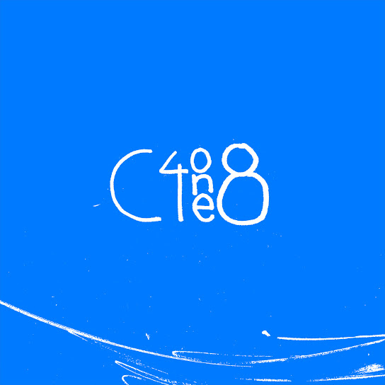

C418 por su nombre real Daniel Rosenfeld,es un músico,
productor e ingeniero de sonido alemán conocido como el
compositor y diseñador de sonido para el videojuego Minecraft.
Escuchalo aqui.
Nacimiento: 9 de mayo de 1989, República Democrática Alemana
Canciones mas populares:
El album One esta infravalorado, es arte
Album One 